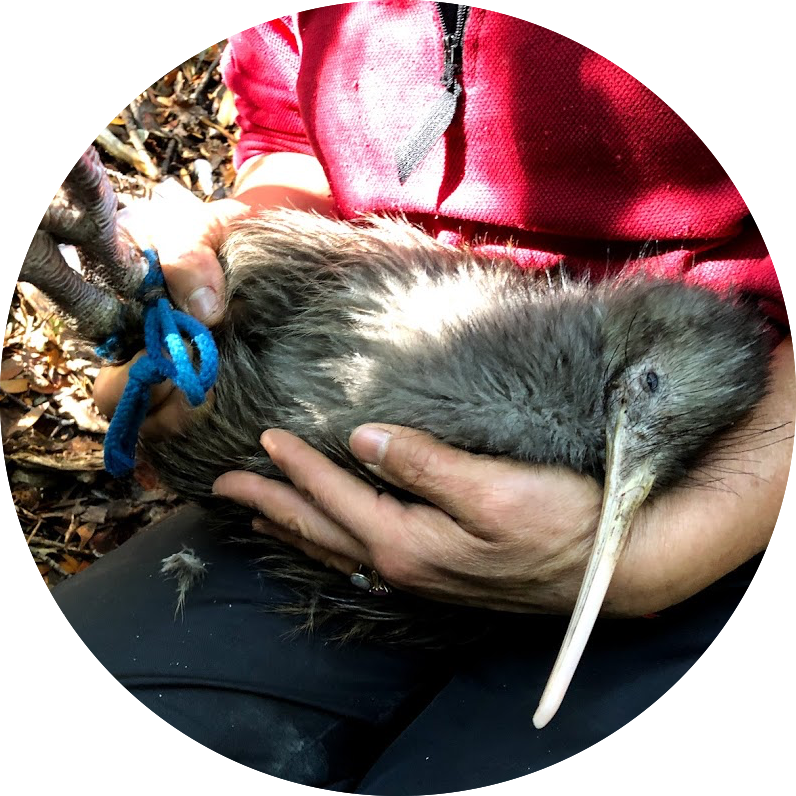
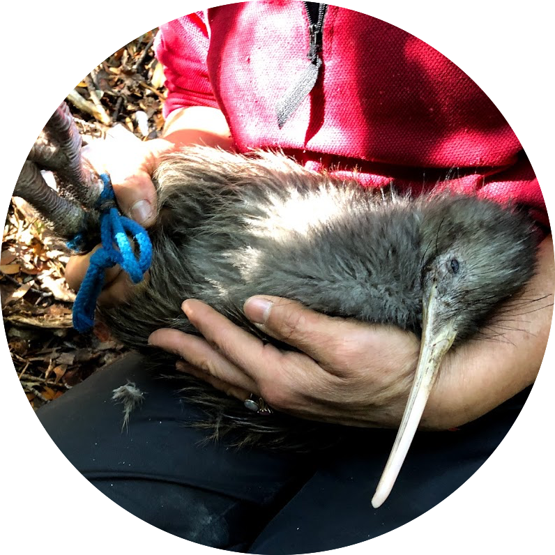

I am postdoctoral researcher at the Natural History Museum of Los Angeles County in Kayce Bell's lab. I completed my PhD in Tadashi Fukami's lab at Stanford University. I received my Bachelor of Arts in Environmental Science and a minor in Global Sustainability at the University of California, Irvine.
Broadly, I am interested in understanding what shapes relationships between hosts and the communities they harbor, including their commensal microbes and their parasites.
During my PhD, I was funded by the Ford Foundation as a predoctoral fellow, as well as, by Stanford VPGE as a DARE Fellow. If these fellowships are of interest to you, I am always happy to chat/help. Just send me an email!